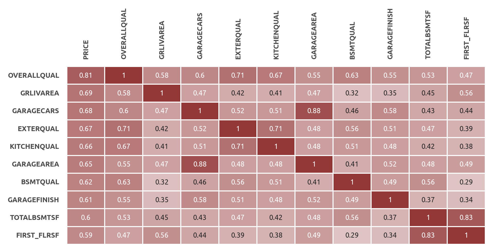

Современные алгоритмы машинного обучения обычно превосходят классические линейные модели в точности прогнозов, но при этом сложны в интерпретации. Некоторые алгоритмы имеют встроенный функционал приоритизации предикторов, но этого недостаточно для оценки взаимосвязей в данных.
Этапы
Секция 1: Исследование и подготовка данных
На первом этапе проводится первичный анализ данных, визуализация, а также необходимые преобразования. Среди прочего заполняются пропущенные значения, выявляются и исправляются противоречия в данных, определяются наиболее значимые и создаются дополнительные предикторы, данные кодируются и стандартизируются. По итогам каждого этапа преобразований обучается промежуточная ML-модель LightGBM.
- очищенный и преобразованный датасет;
- датасеты для пайплайнов секции машинного обучения;
- три промежуточные ML-модели.
Секция 2: Регрессионный анализ
В этом разделе рассматриваются две регрессионные модели: эластичная сеть и линейная регрессия (без регуляризации).
Для эластичной сети подбирается оптимальное значение гиперпараметра \( \alpha \) и строится график зависимости RMSE от числа используемых предикторов. Десять наиболее релевантных предикторов используются для построения линейной регрессии. После диагностики регрессии, она сравнивается с эластичной сетью с применением ресэмплинга.
- линейная модель для первого уровня итогового оценщика HPP
- эластичная сеть для сравнения с другими моделями.
Секция 3: Машинное обучение
Секция машинного обучения состоит из двух частей.
- ML-модель для прогноза остатков регрессии;
- ML-модель для прогноза цены дома.
Секция 4: Подведение итогов
На заключительном этапе проводится сравнение имеющихся моделей, делается заключение об эффективности оценщика HPP, исследуются остатки его прогнозов, предлагаются шаги для дальнейшего исследования данных и развития структуры HPP.
- оценка HPP;
- рекомендации по дальнейшим шагам.
Результаты
Предсказательная эффективность HousePricePredictor (HPP)
График демонстрирует эффективность прогнозирования семи моделей, построенных на разных стадиях проекта.
- Base - базовая модель LightGBM после удаления пропусков;
- Base (Clean) - промежуточная модель LightGBM после очистки данных;
- Base (FE) - промежуточная модель LightGBM после генерации новых признаков;
- Elastic Net - лучшая регрессионная модель (эластичная сеть);
- SVM - лучшая линейная ML-модель;
- Stacking - лучшая ML-модель;
- HousePricePredictor(HPP) - модель, полученная в результате комбинации линейной регрессии и стэкинга.
В ходе проекта удалось снизить ошибку RMSE c 0.1216 у базовой модели до 0.0969 итогового оценщика HousePricePredictor. На этапе преобразования наибольший вклад внесла очистка данных, а несколько дополнительно сгенерированных предикторов полезны как для линейной регрессии, так и для более сложных алгоритмов машинного обучения (см. '8. Создание дополнительных предикторов', '12. Линейная регрессия', '15. Оценка независимых ML-моделей').
Интерпретациия модели
Ядром HousePricePredictor является классическая линейная регрессия. Коэффициенты и доверительные интервалы представлены в таблице ниже.
- С увеличением средневзвешенной площади этажей на 1% цена увеличивается на 0.144%;
- С увеличением качества материалов на 1 пункт цена увеличивается на 8.8%;
- С увеличением возраста дома на 1 год цена уменьшается на 8.5%
Интерпретацию остальных коэффициентов см. в разделе '12. Линейная регрессия'.
Визуализация актуальных и предсказанных HousePricePredictor цен
Ось абсцисс - элементы, отсортированные по суммарной площади первого и второго этажа
Секция 1. Исследование и подготовка данных
2. Описание датасета
В проекте используется один из датасетов, опубликованных на Kaggle. Это задача регрессии, в которой требуется спрогнозировать стоимость дома, используя значения его характеристик и исторические данные о предыдущих сделках.
- Число предикторов - 79;
- Число элементов - 1460.
Данные разбиваются на два датасета в соотношении 9 к 1: обучающий train (1314 элемента) и проверочный test (146 элемента).
Целевая переменная
Распределение целевой переменной напоминает гамма-распределение. Это одномодальное распределение с вершиной в районе 150000$ и правосторонней асимметрией.

Характеристики
В датасете 79 независимых переменных:
- Количественные признаки - 34;
- Категориальные признаки - 45:
- Порядковые - 18;
- Номинативные - 27.
Группы предикторов
Для более детального анализа предикторы разделяются на группы. Этот подход полезен для генерации дополнительных признаков, являющихся производными от основных характеристик, а также для очистки и проверки данных на логические противоречия.
- Качество помещений и материалов;
- Относящиеся к гаражу;
- Относящиеся к подвалу;
- Предикторы, связанные с площадью;
- Типы помещений (комнаты, подвал);
- Год постройки дома/гаража, модернизации, и т.д.;
- Двор и область вокруг дома;
- Строительный материал;
- Конструкционные особенности;
- Состояние (уровень износа);
- Удобства;
- Окружение (район, улица, и т.д.);
- Организационные аспекты продажи.
3. Заполнение отсутствующих значений
Категориальные переменные
Некоторые переменные содержат множество пропущенных значений. Иногда их количество достигает почти 100% от общего числа элементов.
Количественные переменные
Пропущенные значения имеются у трех количественных переменных:
lotfrontage - длина участка улицы, прилегающей к придомовой территории
237 (18%) пропусков заполняются медианным значением. Помимо этого, обнаружены два потенциальных выброса (выделены красным).
garageyrblt - год постройки гаража
73 (6%) пропусков заполняются годом постройки дома.
masvnrarea - площадь облицовки фундамента
8 (1%) пропусков. Более детальное изучение этой и связанных с ней переменных показывает, что все пропущенные значения соответствуют отсутствию облицовки (переменная
4. ML-модель №1 (базовая)
Алгоритм LightGBM используется в качестве базовой ML-модели, потому что он оптимален с точки зрения эффективности и производительности.
Результаты 1-го этапа подбора гиперпараметров
Лучшие результаты (RMSE примерно 0.130) показывают сложные модели с большим числом деревьев (75), увеличение числа листьев положительно сказывается на эффективности модели. Оптимальная скорость обучения - 0.1. RMSE лучшей модели - 0.1282.

Результаты 2-го этапа подбора гиперпараметров
Ошибка уменьшилась незначительно - с 0.1282 до 0.1276.
ML-модель №1 (базовая)
Таким образом, базовая модель (RMSE: 0.1276) имеет следующую конфигурацию:
5. Исследование данных
Матрица корреляций
В топ-10 в основном попали оценки площади и качества различных составляющих дома (см. рисунок ниже, клик для увеличения изображения).

Количественные признаки
Ключевые инструменты для исследования количественных переменных - гистограммы и диаграммы рассеяния с добавлением линии регрессии.
Категориальные признаки
Ключевые инструменты для исследования категориальных переменных - диаграмма рассеяния с линией регрессии и точечная диаграмма.

6. Очистка и проверка на несоответствие
6.1. Проверка данных на несоответствие
В этом пункте данные проверяются на несоответствие, например, суммарная площадь жилого пространства не должна быть больше или меньше суммы площадей всех комнат.
- У 6 элементов год постройки гаража меньше года постройки дома. В некоторых случаях эта разница составляет несколько лет.
Возможная причина:
- Постройка гаража может быть первым этапом строительства, но после её завершения возможна заморозка стройки, например, из-за финансовых трудностей. Соответственно, сам дом будет достроен только через несколько лет. Такое несоответствие допускается.
Решение:
- Данные не исправляются.
MASVNRAREA (Площадь облицовки фундамента)
- У 7 элементов площадь облицовки равна 0 (эквивалентно тому, что облицовка отсутствует), при этом тип облицовки не равен NA; и наоборот (см. таблицу выше).
Возможная причина:
Ошибка ввода данных.
Решение:
- Исправление вручную. Во время исправления ошибок будем ориентироваться на тип облицовки (
masvnrtype ) и цену дома (price ). На графике видно, что наиболее дорогие - это дома с облицовкой из камня (Stone) и кирпича (BrkFace).
В данных имеется три различных типа противоречий, и соответственно, будут исследованы три группы элементов.
Элементы с индексом 1230 и 733
Противоречие:
- Если
masvnrtype равен NA, тоmasvnrarea должна быть равна 0.
Варианты исправления:
- Или
masvnrtype присваивается какое-то значение, илиmasvnrarea приравнивается к 0.
Решение:
masvnrarea приравнивается к 0.
Аргументы:
- Цены этих домов примерно равны 12.0 - это может говорить о том, что облицовка отсутствует (средняя цена домов без облицовки - 11.9).
- Самое низкое значение переменной
masvnrarea - 10 (см. график ниже); вероятно, 1 - это ошибка ввода данных.
Элементы с индексом 1241 и 688
Противоречие:
- Если
masvnrarea равна нулю, тоmasvnrtype должен быть равен NA.
Варианты исправления:
- Или
masvnrarea присваивается какое-либо значение, илиmasvnrtype меняется на NA.
Решение:
masvnrarea присваивается медианное значение элементов, у которых такой же тип облицовкиmasvnrtype .
Аргументы:
- Цена элементов с нулевой
masvnrarea достаточно большая, что говорит скорее в пользу наличия облицовки (т.е. в пользу того, чтоmasvnrarea не равна нулю), поэтомуmasvnrarea заполняется медианным значением.
Элементы с индексом 624, 1300 и 1334
Противоречие:
- Если
masvnrarea не равна нулю, тоmasvnrtype не должен быть NA.
Варианты исправления:
- Или
masvnrtype присваивается какое-то значение, илиmasvnrarea приравнивается к 0.
Решение:
- Элементы 624 и 1334:
masvnrarea приравнивается к 0; - Элемент 1300:
masvnrtype присваивается значение Stone.
Аргументы:
- Для всех трех элементов выбор сделан исходя из их цены - у дорогих домов чаще встречается
masvnrtype , равный Stone, а у недорогих - NA.
Исправленные данные
6.2. Выявление и удаление выбросов
Два подозрительно высоких значения 
7. ML-модель №2 (после очистки данных)
Здесь применяется тот же двухэтапный подход, который использовался в пункте "4. ML-модель №1 (базовая)". Лучшая модель демонстрирует RMSE на уровне 0.1233 (у базовой модели RMSE равна 0.1276). Конфигурация модели выглядит следующим образом:
Промежуточные результаты
После очистки и исправления данных модель стала проще и эффективнее.
8. Создание дополнительных предикторов.
На данном этапе предикторы разбиваются на
8.1. Предикторы, характеризующие площадь.
Исследовано 17 предикторов, создан 1 дополнительный -
где \( weight_1 \) и \( weight_2 \) - это вес первого и второго этажа соответственно.
После нескольких тестов веса принимаются равными 1 и 0.7, соответственно. Итоговая формула выглядит следующим образом:
Коэффициент корреляции нового предиктора
8.2. Предикторы, характеризующие помещения (жилые и ванные комнаты, кухни).
Исследовано 7 предикторов, создано 5 дополнительных -
bedroomsize ,kitchensize : относительное количество спален и кухонь по площади - рассчитывается как количество спален/кухонь, деленное на суммарную площадь первого и второго этажа (grlivarea );bedroomfracrms ,kitchenfracrms : относительное количество спален и кухонь по общему числу комнат - рассчитывается как количество спален/кухонь, деленное на общее число комнат (totrmsabvgrd );bathsfracbedr : относительное число ванных комнат на спальню - рассчитывается как число совмещенных ванных комнат, деленное на число спален (bedroomabvgr ).
Наиболее информативным из новых признаков является относительное число кухонь (
8.3. Предикторы, характеризующие даты.
Добавлены новые предикторы
9. Предварительная подготовка данных
Данные до преобразования
Количественные переменные
Количественные предикторы логарифмируются (натуральный логарифм) с помощью
Категориальные переменные
Для преобразования категориальных переменных используется
Стандартизация
После этого данные стандартизируются с помощью
10. ML-модель №3 (после создания новых признаков)
Добавление новых предикторов почти не повлияло на эффективность модели (RMSE уменьшилась с 0.1233 до 0.1230). Число деревьев увеличилось на 10, глубина деревьев увеличилась в два раза, а число листьев не изменились.

Промежуточные результаты
Дисперсия результатов модели после добавления новго предиктора несколько увеличилась при том, что эффективность осталась на прежнем уровне.
Секция 2. Регрессионный анализ
11. Эластичная сеть
В этом пункте строится эластичная сеть, оценивается влияние регуляризации на эффективность и исследуется, какие предикторы выбирает сеть в зависимости от величины параметра регуляризации.
12. Линейная регрессия
Предикторы должны соответствовать следующим требованиям:
- Они удобны в интерпретации и понятны любому пользователю;
- Они входят в состав наиболее информативных предикторов эластичной сети;
- Они статистически значимы на уровне \( \alpha \), равном 0.05;
- Включение дополнительного признака в модель увеличивает скорректированный коэффициент детерминации \( R^{2}_{adj} \).
В итоге выбраны следующие предикторы:
lg_flrsfmean - средневзвешенная площадь этажей;lg_lotarea - площадь придомовой территории;overallqual - оценка качества дома;kitchenqual - оценка качества кухни;exterqual - оценка качества материала фасада;bsmtqual - оценка качества подавала;overallcond - оценка состояния дома;houseage - возраст дома на момент продажи;garagecars - количество машиномест в гараже.
Для повышения надежности оценки доверительных интервалов коэффициентов используется метод HC3, устойчивый к гетероскедастичности.
Оценка качества регрессии
Визуальная оценка
Интерпретация коэффициентов
Все оценки действительны при прочих равных:
lg_flrsfmean - при увеличении средневзвешенной площади этажей на 1%, цена увеличивается на 0.144%;overallqual - при увеличении качества материалов на 1 пункт, цена увеличивается на 8.8%;houseage - при увеличении возраста дома на 1 год цена уменьшается на 8.5%;lg_lotarea - при увеличении площади придомовой территории на 1%, цена увеличивается на 0.0613%;overallcond - при увеличении оценки состояния дома на 1 пункт, цена увеличивается на 5.58%;bsmtqual - при увеличении оценки качества подавала на 1 пункт, цена увеличивается на 4.59%;garagecars - при увеличении количество машиномест на 1 единицу, цена увеличивается на 3.16%;kitchenqual - при увеличении оценки качества кухни на 1 пункт, цена увеличивается на 2.66%;exterqual - при увеличении оценки качества материала фасада на 1 пункт, цена увеличивается на 2.03%;
Вывод
Линейная регрессия объясняет 88% изменчивости целевой переменной, что является хорошим результатом. Используемые предикторы значимы, понятны и легко интерпретируемы. Тем не менее, модель не в полной мере соответствует имеющимся данным. Это объяснимо, если учесть тот факт, что не были использованы некоторые важные признаки (
13. Результаты линейных моделей на сэмплированных данных
Сгенерированные с помощью симуляций подвыборки не содержат дополнительной информации. Тем не менее, если предположить, что исходный датасет достаточно точно отражают генеральную совокупность, результаты симуляций могут быть полезны для оценки дисперсии прогнозов. Симуляции проводились на 1000 сэмплах с повторением (число элементов в сэмпле и исходных данных одинаково).
- линейная регрессия из п.12 - 0.1352;
- эластичная сеть (alpha: 0.0067, L1 ratio: 0.1) - 0.1347.
Прогнозы отдельно взятых элементов практически не различаются (что показывают предиктивные интервалы). Однако на длинной дистанции (для бóльшего числа элементов) в среднем эффективность эластичной сети выше, поэтому она будет включена в итоговое сравнение как наиболее эффективная регрессия.
Промежуточные результаты
По предсказательной точности регрессионная модель заметно уступает ML-алгоритмам, но при этом имеет мéньшую дисперсию прогнозов.
Секция 3. Машинное обучение
14. Выбор алгоритма машинного обучения для прогнозирования остатков линейной регрессии
В этом разделе выбирается алгоритм для прогнозирования остатков линейной регрессии (п.14.1., п.14.2., п.14.3.). После этого создается модель
14.1. Опорные вектора, бустинги, бэггинг, случайный лес, K-ближайших соседей
На первом этапе обучаются следующие ML-модели:
KNN - K-Nearest Neighbors;SVR - Support Vector Machine;RF - Random Forest;Bagging - Bagging Regressor;LGBoost - Light Gradient Boosting;HGBoost - Histogram-based Gradient Boosting;XGBoost - Extreme Gradient Boosting.
В качестве предикторов используются все сгенерированные в предыдущих пунктах признаки, а также прогнозы линейной регрессии (предиктор
neighborhood - район расположения дома, он вошел в топ-4 ключевых признаков каждой из моделей;lg_bsmtfinsf_first - площадь подвала 1 типа, 3 модели поместили его в топ-4 ключевых признаков;price_pred_lr - также в топ-4 у трех моделей, но менее значим, чемlg_bsmtfinsf_first.
Число попаданий в топ-10 ключевых признаков
Результаты на 20-фолдовой кросс-валидации выглядят следующим образом (опорные вектора демонстрируют неожиданно высокий результат).
14.2. Добавление метаоценщиков верхнего уровня - алгоритмы Voting и Stacking
На втором этапе оценивается эффект от поочередного включения в модель оценщиков верхнего уровня.
14.3. Сравнение всех ML-алгоритмов и выбор оценщика остатков регрессии
Суммарные результаты всех обученных в этом разделе моделей выглядят следующим образом
14.4. Объединение линейной регрессии и ML-алгоритма в итоговый оценщик HPP
Класс
15. Обучение независимых ML-моделей
Здесь, как и в предыдущем пункте, в первую очередь обучаются популярные ML-алгоритмы, а после этого исследуется влияние оценщиков верхнего уровня 
Промежуточные результаты
Для итогового сравнения выбраны две ML-модели: стэкинг (наиболее эффективный) и SVM (лучший линейный алгоритм).
Секция 4. Подведение итогов
16. Сравнение всех моделей
В данном пункте оценщик HousePricePredictor сравнивается с моделями из предыдущих пунктов. Три базовых модели LightGBM обучены на разных этапах подготовки данных (удаление пропусков, очистка, генерация дополнительных признаков). Для обучения регрессионной модели (эластичная сеть) используются те же предикторы, которые были использованы для линейной регрессии в HousePricePredictor. Две ML-модели представляют лучшую линейную (SVM) ML-модель и лучший ансамблевый алгоритм (Stacking).
Base - базовая модель (LightGBM) после удаления пропусков;Base (Clean) - промежуточная модель (LightGBM) после очистки данных;Base (FE) - промежуточная модель (LightGBM) после генерации новых признаков;Elastic Net - лучшая регрессионная модель (эластичная сеть);SVM - лучшая линейная модель (SVM);Stacking - лучший ансамблевый алгоритм (Stacking);HPP - сочетание линейной регрессии и стэкинга (HousePricePredictor).
Сводный график и таблица с результатами
- Результат комбинирования линейной регрессии и алгоритмов машинного обучения превысил ожидание. Итоговый оценщик не только не уступает лучшей модели, но и превосходит её в точности;
- Очистка и исправление данных увеличили прогнозную точность базовой модели и уменьшили доверительный интервал;
- Генерация новых признаков сказалась на конфигурации базовой модели, но не на точности прогнозов (при этом неправильно утверждать, что новые признаки бесполезны - они использовались другими моделями, в частности линейной регрессией HousePricePredictor);
- Эластичная сеть ожидаемо продемонстрировала худшие результаты (что во многом связано с ограниченным числом предикторов в этой модели);
- Опорные вектора (SVM) неожиданно продемонстрировали сравнительно хорошие результаты. По эффективности этот алгоритм уступил только стэкингу (Stacking). Можно предположить, что это обусловлено высоким уровнем линейности взаимосвязей в данных;
- Stacking и HPP показывают хорошую кучность (это видно на нижнем графике swarmplot).
Визуализация ошибок 20 фолдов кросс-валидации HousePricePredictor и Stacking
17. Актуальные и спрогнозированные цены
Сопоставление актуальных и спрогнозированных HousePricePredictor цен (элементы по оси Х отсортированы в сторону увеличения суммарной жилой площади)
18. Анализ остатков HPP
В данном пункте исследуются остатки прогнозов HPP.
Абсолютные ошибки
Для домов с суммарной жилой площадью менее 1900 футов RMSE равна 0.084705.
С увеличением площади дома значительно возрастает и дисперсия прогнозов - RMSE равна 0.132874.
Относительные ошибки (предсказанная цена относительно актуальной цены)
С другой стороны, если взглянуть на относительные ошибки, то зависимость от величины жилой площади менее очевидна. Можно увидеть некоторые паттерны, если дополнительно построить линии локальной регрессии (LOWESS). Форма остатков в левой части графика напоминает форму вогнутой параболы с вершиной в районе площади, равной 1250. В правой части графика явно-выраженная закономерность отсутствует, что может быть следствием недостаточного числа элементов.

19. Дальнейшие шаги
Предложение 1
В пункте "18. Анализ остатков HPP" показано, что дисперсия остатков увеличивается с увеличением площади дома. Чем больше величина ошибок в абсолютном выражении, тем выше потери от неверно предсказанных цен. Поэтому можно разбить исходные данные на две группы - большие дома с суммарной площадью выше 1900 квадратных футов и маленькие дома с площадью ниже 1900 - и исследовать их отдельно друг от друга, чтобы построить две разные модели.
Предложение 2
Используя схему
Предложение 3
Предиктор